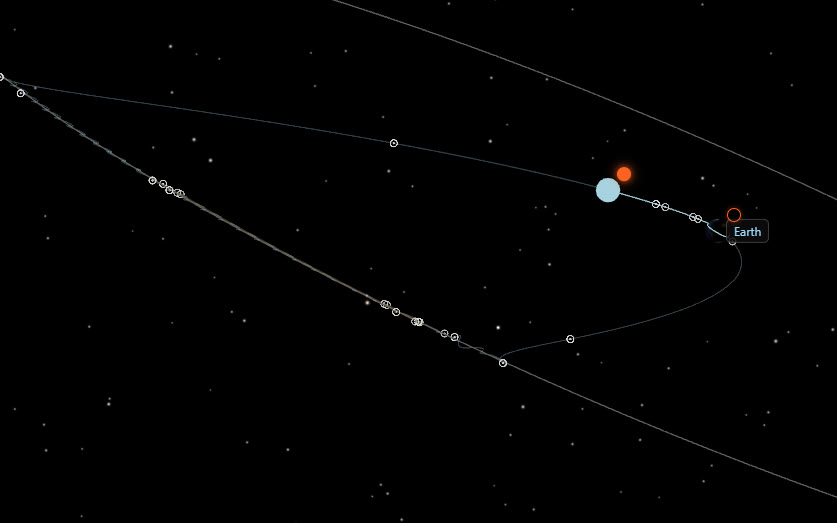

A solar-system engine that shows its working
Astraeus is an open-source TypeScript library for astronomy on the web. It looks after time scales, orbits, reference frames and the distances between a moon and a comet, and it records where every position came from and how closely it has been checked. A page built on it can then tell its reader what is measured and what is filled in.

The problems it deals with
Drawing a planet in a browser is easy. Putting it in the right place on a given date, next to a spacecraft from a different data source, at a scale where both can be seen, takes most of the work. These are the parts Astraeus handles.
Sources disagree about time
Ephemerides use TDB and mission reports use UTC, and today the two differ by 69 seconds. Astraeus converts every moment once, in one place, so the Moon, the planets and a spacecraft agree on the same instant.
Apollo 11: 30 events timed to 0.1 s
Positions arrive in different frames
Horizons can give equatorial or ecliptic vectors; orbital elements are ecliptic. The engine holds everything in J2000 equatorial and converts on the way in, so one scene can mix them.
plane: "ecliptic-j2000" converts a path once
The distances do not fit a 3D scene
Graphics hardware draws in 32-bit floating point, which runs out of precision long before Neptune at true scale. The scene re-centres on whatever you look at, so a comet 51 AU out stays still on screen.
measured drift: 0.002 px at 51 AU
Some of the data does not exist
The Global Meteor Network measures each meteoroid's orbit but not where it is along that orbit today. The engine spreads them evenly and labels that illustrative; a moon without its data package fails with an error rather than being made up.
every value: observed, modelled or illustrative
What a general 3D library leaves to you
Three.js, which Astraeus draws with, is excellent at drawing. It has no idea where Mars was on a given date. This is what that gap looks like in practice.
| Question | On your own | With Astraeus |
|---|---|---|
| Where is Mars on this date? | Find an ephemeris, fit or interpolate it, convert its frame | Built in from JPL Horizons, 1950 to 2045, within 1 km |
| Where are Saturn's moons? | Download and store Horizons tables per moon | 292 moons in an optional package, fetched a year at a time |
| What does the sky behind look like? | Pick a star catalogue and place it in the right frame | 8,920 naked-eye stars from HYG and a Gaia-based Milky Way |
| How do I scrub through time? | Write a clock, a timeline and playback controls | A timeline with events, pacing and story panels |
| How sure is this position? | Usually unrecorded | Every body carries its source, and its measured accuracy where there is one |
What it has been used for
Three demonstrations on this site, and separate apps that install the published package from npm.
- Open →
Apollo 11
The eight-day mission, with seven story panels that cite their sources.
- Open →
Meteor showers
The Perseids and Geminids from 25,588 and 51,115 measured orbits.
- Open →
Jupiter and Io
Every known moon of Jupiter on its orbit; Io with its surface mapped.
- Visit →
The asteroid belt
About 110,000 main-belt asteroids and 16,475 Jupiter Trojans from NASA/JPL elements.
- Visit →
Meteor showers
A standalone meteor-shower site on the 0.2.0 package.
- Visit →
Earth's Closest Calls
The ten closest asteroid flybys of Earth since 2020.
Checking the numbers
Most of the engine's accuracy claims can be checked against JPL Horizons. Io is the clearest example: its position comes from short fits to Horizons rather than a table, and stays within 4 cm of it. Move the slider to see the table and the fit side by side.
Hour 0.0 · Io is 421,000 km from Jupiter's centre
Who makes it
Astraeus is written by Ani Patke, with AI doing a lot of the typing. It is MIT-licensed, the source is on GitHub, and every release is listed in the changelog with what changed and what broke.
- Licence
- MIT
- Package
astraeuson npm, version 0.10.1- Releases
- 0.1.0 on 23 October 2026 to 0.10.1 on 23 November 2026
- Docs
- Guide · API reference · Parts